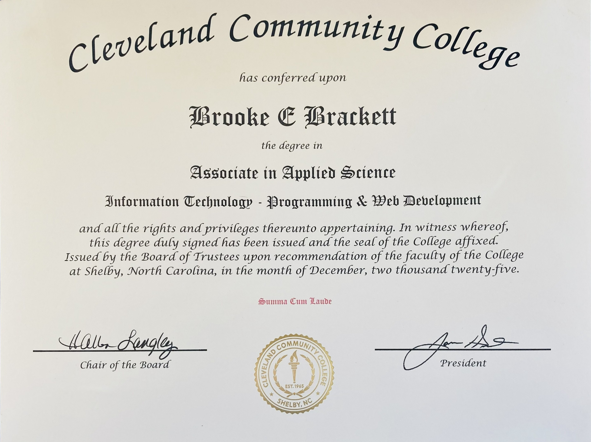

A Programming & Web Development graduate (Summa Cum Laude) with a non-traditional background that combines self-employment, client service, caregiving, and technology. Living and working in a rural community required initiative, adaptability, and a strong work ethic, qualities that continue to drive my success today. Through formal education, a remote digital marketing internship, and independent technology projects including the development of AIForgeRun.com, I have built a foundation of both technical and interpersonal skills that I am eager to bring to a remote-first organization.
Core Skills
Customer Service, Client Relations, Phone Support, Email Communication, Scheduling, Data Entry, Technical Support, Microsoft Office, Google Workspace, Documentation, Team Collaboration, SEO, WordPress, HTML, CSS, JavaScript, Marketing.
Digital Marketing Intern (Remote)
Epitome Digital Marketing | Aug 2025 - Dec 2025
Built WordPress websites and conducted audits to improve functionality and user experience.
Assisted with content optimization and remote client projects.
Independent Residential Cleaning Professional
Self-Employed | Jan 2022 - Present
Manage customer scheduling, communications, billing, and service delivery for residential clients.
Earn repeat business through reliable service, professionalism, and strong customer relationships.
Private Caregiver
Private In-Home Care, Casar, NC | 2014 - 2021
Provided compassionate support and assistance with daily living activities for elderly clients.
Communicated effectively with families and healthcare professionals while maintaining confidentiality and trust.
Cleveland Community College, Shelby, NC
Associate in Applied Science, Programming & Web Development, Summa Cum Laude (2025)
Certificates: Web Development Specialist, Webmaster, Computer Science Foundation, IT Foundations, Social Media

Casar, NC | brkbrcktt@gmail.com | LinkedIn